Listening visuals Cambridge 5Reviewed results: 122 confirmed issue records (86 duplicate pairs, 9 sequence inversions, 1 wrong-Part image, 26 clipped images); 23 suspected records. Counts overlap Parts/assets. Full reviewed CSV. Raw audit.json/findings.csv are detector output, not the final defect list. Fallback scope alone is not a defect. OCR ranges are incomplete hints.
All books · Cambridge 5: 16 Parts · exact current resolver outputCambridge 05 / Test 1 / Part 1
V0027:confirmed:duplicate_content; C029:confirmed:clipped_source
Q[1, 4]: 1, 2, 3 [Part fallback]
Q[5, 6]: 1, 2, 3 [Part fallback]
Q[7, 10]: 1, 2, 3 [Part fallback]
#1 OCR Q[] · 911×804
Test_1_Section_1_Dreamtime_Tour_Form.png
assets/public/0fc00612b8aa4c287947961216f1f300c8e542226d6f56329de341c4a0e9daba.png
asset-0fc00612b8aa4c287947961216f1f300c8e542226d6f56329de341c4a0e9daba#2 OCR Q[] · 1248×1748
Test_1_Section_1_PDF_Page_011.jpg
assets/public/0d7083daf984f67cc1c9a5c193ee897d7728c4320b6e87138280551eaff169c8.jpg
asset-0d7083daf984f67cc1c9a5c193ee897d7728c4320b6e87138280551eaff169c8#3 OCR Q[[7, 10]] · 1248×1748
Test_1_Section_1_PDF_Page_012.jpg
assets/public/5e06a6915b144a4d2c67ba335b9ceebafe2473c322cacd083b762f34df1c2b48.jpg
asset-5e06a6915b144a4d2c67ba335b9ceebafe2473c322cacd083b762f34df1c2b48 Cambridge 05 / Test 1 / Part 2
V0031:confirmed:duplicate_content
Q[11, 19]: 1, 2
Q[20, 20]: 1, 2 [Part fallback]
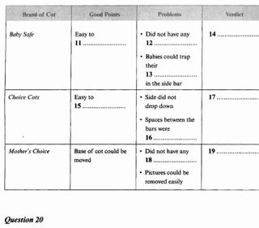
#1 OCR Q[] · 1136×996
Test_1_Section_2_Cot_Comparison_Table.png
assets/public/a2f4da1b8b85b6604469173693bb149994349b252b3b7ee6ea18e0a64f8584b6.png
asset-a2f4da1b8b85b6604469173693bb149994349b252b3b7ee6ea18e0a64f8584b6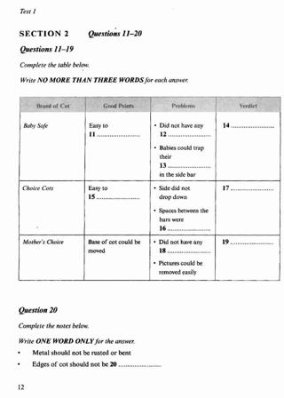
#2 OCR Q[[11, 19], [11, 20]] · 1248×1748
Test_1_Section_2_PDF_Page_013.jpg
assets/public/424e3b0e04b70a3f77be474e53b327d4887621ca3c391d828b84a7e56ad2045b.jpg
asset-424e3b0e04b70a3f77be474e53b327d4887621ca3c391d828b84a7e56ad2045bCambridge 05 / Test 1 / Part 3
V0033:confirmed:duplicate_content
Q[21, 23]: 1, 2, 3 [Part fallback]
Q[24, 25]: 1, 2, 3 [Part fallback]
Q[26, 30]: 1, 2, 3 [Part fallback]
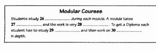
#1 OCR Q[] · 1161×385
Test_1_Section_3_Modular_Courses_Summary.png
assets/public/1e77680275d501f5c30dd18d39ad931b608df5bb5798302e91da71afe1921ee6.png
asset-1e77680275d501f5c30dd18d39ad931b608df5bb5798302e91da71afe1921ee6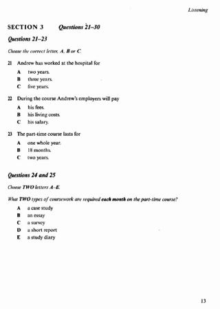
#2 OCR Q[[21, 30], [21, 23]] · 1248×1748
Test_1_Section_3_PDF_Page_014.jpg
assets/public/c50b6517d80cfa56cb29d9766fa0495b63fcea0b1bd3b2d014e2dac210aea3b0.jpg
asset-c50b6517d80cfa56cb29d9766fa0495b63fcea0b1bd3b2d014e2dac210aea3b0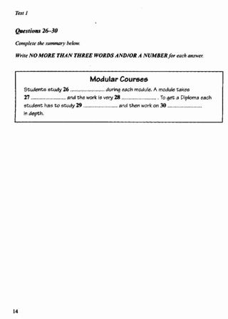
#3 OCR Q[[26, 30]] · 1248×1748
Test_1_Section_3_PDF_Page_015.jpg
assets/public/2e684c3b4e4cf399b0104228f0e1a46e72687d75bf4dd4510c9f02a07ac69988.jpg
asset-2e684c3b4e4cf399b0104228f0e1a46e72687d75bf4dd4510c9f02a07ac69988Cambridge 05 / Test 1 / Part 4
V0037:confirmed:duplicate_content; C023:confirmed:clipped_source
Q[31, 35]: 1, 2 [Part fallback]
Q[36, 40]: 1, 2 [Part fallback]
#1 OCR Q[] · 1173×559
Test_1_Section_4_Saving_For_The_Future.png
assets/public/37ce358e0ef8517946a72e80bac80ed89bd9fc500f20fdeb7aa31276d259a3ba.png
asset-37ce358e0ef8517946a72e80bac80ed89bd9fc500f20fdeb7aa31276d259a3ba#2 OCR Q[[31, 40], [31, 35], [36, 40]] · 1248×1748
Test_1_Section_4_PDF_Page_016.jpg
assets/public/1032e82bda643fad6b2ce5b1120cbbec309299c570b1317e800cf8f19dfb4f5f.jpg
asset-1032e82bda643fad6b2ce5b1120cbbec309299c570b1317e800cf8f19dfb4f5f Cambridge 05 / Test 2 / Part 1
V0040:confirmed:duplicate_content; C037:confirmed:clipped_source
Q[1, 10]: 1, 2 [Part fallback]
#1 OCR Q[] · 1136×979
Test_2_Section_1_Library_Information.png
assets/public/b9195c6cf1c8fd4c9706461e7698ac10491768a2b7dc9d39bc060c27eaddb34a.png
asset-b9195c6cf1c8fd4c9706461e7698ac10491768a2b7dc9d39bc060c27eaddb34a#2 OCR Q[[1, 10], [1, 10]] · 1248×1748
Test_2_Section_1_PDF_Page_033.jpg
assets/public/0128cad01bee1e04f1ebcf3c7c5cc76e662994aede8d6431b5a013144794fa31.jpg
asset-0128cad01bee1e04f1ebcf3c7c5cc76e662994aede8d6431b5a013144794fa31 Cambridge 05 / Test 2 / Part 2
No confirmed/candidate defect detected; not a visual PASS
Q[11, 15]: 1, 2 [Part fallback]
Q[16, 17]: 1, 2 [Part fallback]
Q[18, 20]: 1, 2 [Part fallback]
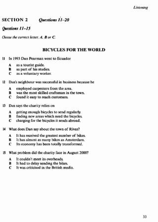
#1 OCR Q[[11, 20], [11, 15]] · 1248×1748
Test_2_Section_2_PDF_Page_034.jpg
assets/public/ee901e6af5b80024f2378c27f9866bd8b32d67cea277a91d7d788f3fb0a5b084.jpg
asset-ee901e6af5b80024f2378c27f9866bd8b32d67cea277a91d7d788f3fb0a5b084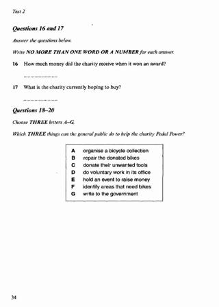
#2 OCR Q[[18, 20]] · 1248×1748
Test_2_Section_2_PDF_Page_035.jpg
assets/public/4119eb3cafa1db177a779bf4a006734e7410f0e81354e11f325ade8916b326da.jpg
asset-4119eb3cafa1db177a779bf4a006734e7410f0e81354e11f325ade8916b326daCambridge 05 / Test 2 / Part 3
V0045:confirmed:duplicate_content
Q[21, 30]: 1, 2
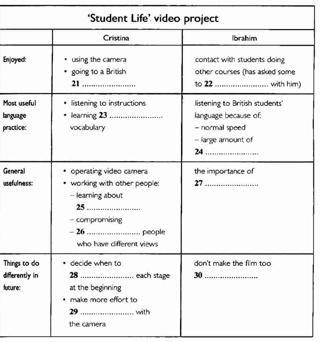
#1 OCR Q[] · 1161×1241
Test_2_Section_3_Student_Life_Video_Project.png
assets/public/6e4d531b8158fec0fb9cc0eddd4d76211c70c04cbe9513651d131271285d1d95.png
asset-6e4d531b8158fec0fb9cc0eddd4d76211c70c04cbe9513651d131271285d1d95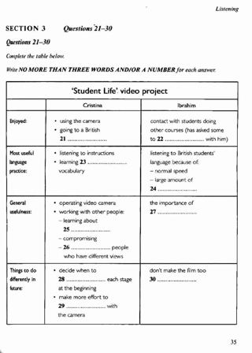
#2 OCR Q[[21, 30], [21, 30]] · 1248×1748
Test_2_Section_3_PDF_Page_036.jpg
assets/public/c4d1845b41bac0081a31c1bb236900f226a470040c081aa628f10f59db4abd78.jpg
asset-c4d1845b41bac0081a31c1bb236900f226a470040c081aa628f10f59db4abd78Cambridge 05 / Test 2 / Part 4
V0046:confirmed:duplicate_content; C004:suspected:crop_edge_risk
Q[31, 40]: 1, 2, 3 [Part fallback]
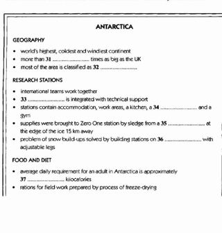
#1 OCR Q[] · 1149×1206
Test_2_Section_4_Antarctica_Notes.png
assets/public/7b451831d806d2d63544db7fd0d057de64ae048edaa5cf32c01946ad0cdb4ee0.png
asset-7b451831d806d2d63544db7fd0d057de64ae048edaa5cf32c01946ad0cdb4ee0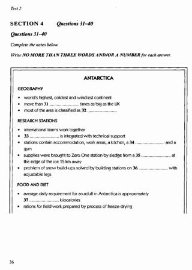
#2 OCR Q[[31, 40], [31, 40]] · 1248×1748
Test_2_Section_4_PDF_Page_037.jpg
assets/public/d2a15aa9a3753b49133f068624c2fbf58699494bb6394bed4a407aa04b4fc748.jpg
asset-d2a15aa9a3753b49133f068624c2fbf58699494bb6394bed4a407aa04b4fc748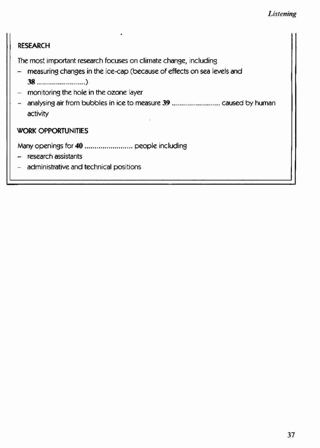
#3 OCR Q[] · 1248×1748
Test_2_Section_4_PDF_Page_038.jpg
assets/public/d98173fe9923c3c488f0d9683b271d6f902a61fd2bdd73b1a2825a37c62b88d8.jpg
asset-d98173fe9923c3c488f0d9683b271d6f902a61fd2bdd73b1a2825a37c62b88d8Cambridge 05 / Test 3 / Part 1
V0048:confirmed:duplicate_content; C034:suspected:crop_edge_risk
Q[1, 10]: 1, 2, 3
#1 OCR Q[] · 1161×1101
Test_3_Section_1_Mintons_Car_Mart_Form.png
assets/public/abeeb8f2859a15f534f6c43649e98be6fd338ae8dc9706196d16729c0576700e.png
asset-abeeb8f2859a15f534f6c43649e98be6fd338ae8dc9706196d16729c0576700e#2 OCR Q[[1, 10]] · 1248×1748
Test_3_Section_1_PDF_Page_056.jpg
assets/public/c5aa08b18f413170684b954b19a4163931f02a82a906d425e1f7d1ecbeb52a38.jpg
asset-c5aa08b18f413170684b954b19a4163931f02a82a906d425e1f7d1ecbeb52a38#3 OCR Q[] · 1248×1748
Test_3_Section_1_PDF_Page_057.jpg
assets/public/0a9ece0c19f86461adeb5e963bdfc3f944c903220b4bc0ca3eda3fdbe97c2967.jpg
asset-0a9ece0c19f86461adeb5e963bdfc3f944c903220b4bc0ca3eda3fdbe97c2967 Cambridge 05 / Test 3 / Part 2
No confirmed/candidate defect detected; not a visual PASS
Q[11, 12]: 1, 2 [Part fallback]
Q[13, 15]: 1, 2 [Part fallback]
Q[16, 20]: 1, 2 [Part fallback]
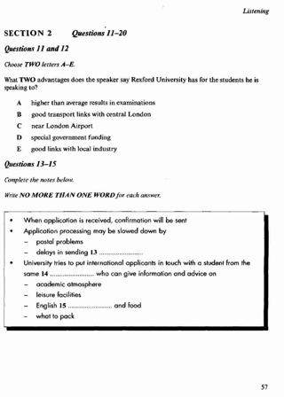
#1 OCR Q[[11, 20], [13, 15]] · 1248×1748
Test_3_Section_2_PDF_Page_058.jpg
assets/public/1decd1de6515df4db621cd124b544857a633fd512ad9eb78c7ec0fa7dfdca4f8.jpg
asset-1decd1de6515df4db621cd124b544857a633fd512ad9eb78c7ec0fa7dfdca4f8#2 OCR Q[[16, 20]] · 1248×1748
Test_3_Section_2_PDF_Page_059.jpg
assets/public/14e70563ed61f23e7c32fe7e149d401cf004a16ecc910f34f3df1bfd0e217dd7.jpg
asset-14e70563ed61f23e7c32fe7e149d401cf004a16ecc910f34f3df1bfd0e217dd7Cambridge 05 / Test 3 / Part 3
V0052:confirmed:duplicate_content; C018:suspected:crop_edge_risk
Q[21, 30]: 1, 2
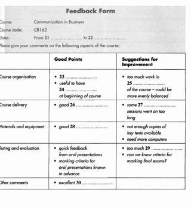
#1 OCR Q[] · 1161×1259
Test_3_Section_3_Feedback_Form.png
assets/public/3adc6215070707f80bbce2a8387e495cfb910cde4ec090cfeff7ba34d886bac1.png
asset-3adc6215070707f80bbce2a8387e495cfb910cde4ec090cfeff7ba34d886bac1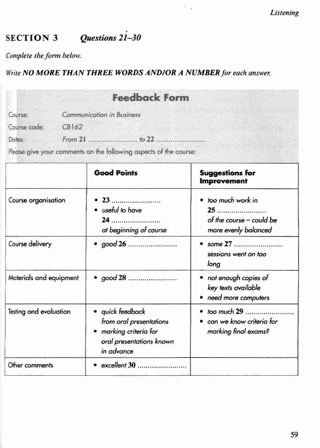
#2 OCR Q[[21, 30]] · 1248×1748
Test_3_Section_3_PDF_Page_060.jpg
assets/public/5e32f5d1dc2c367f36a3de70d05f34a79f4c1aa6939781e11a91e1505f7b9fc7.jpg
asset-5e32f5d1dc2c367f36a3de70d05f34a79f4c1aa6939781e11a91e1505f7b9fc7Cambridge 05 / Test 3 / Part 4
V0053:confirmed:duplicate_content; C031:suspected:crop_edge_risk
Q[31, 35]: 1, 2, 3 [Part fallback]
Q[36, 40]: 1, 2, 3
#1 OCR Q[] · 1124×629
Test_3_Section_4_Recycling_Companies.png
assets/public/20005e8a818b201ac702962fe851c7554719220b80957a08edd4da8cf75cf4b0.png
asset-20005e8a818b201ac702962fe851c7554719220b80957a08edd4da8cf75cf4b0#2 OCR Q[[31, 40], [31, 35]] · 1248×1748
Test_3_Section_4_PDF_Page_061.jpg
assets/public/0c6d9f11ca62fac35fdf04b7c6e364871ca6b9646d7032a10646191a5a737b3c.jpg
asset-0c6d9f11ca62fac35fdf04b7c6e364871ca6b9646d7032a10646191a5a737b3c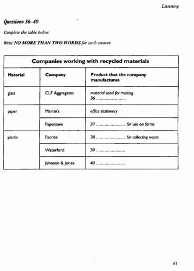
#3 OCR Q[[36, 40]] · 1248×1748
Test_3_Section_4_PDF_Page_062.jpg
assets/public/c78cfcc68b5e42eca2cfd2f88496a16dec48d99b1eab27611ac81d9ac0f6e5a6.jpg
asset-c78cfcc68b5e42eca2cfd2f88496a16dec48d99b1eab27611ac81d9ac0f6e5a6 Cambridge 05 / Test 4 / Part 1
V0055:confirmed:duplicate_content; C001:suspected:crop_edge_risk
Q[1, 10]: 1, 2
#1 OCR Q[] · 1099×1101
Test_4_Section_1_Host_Family_Applicant.png
assets/public/4002fbffc81cbc805614bcb288b918188e11f6fa69bc16fe7b4bf0677345117c.png
asset-4002fbffc81cbc805614bcb288b918188e11f6fa69bc16fe7b4bf0677345117c#2 OCR Q[[1, 10], [1, 10]] · 1248×1748
Test_4_Section_1_PDF_Page_079.jpg
assets/public/a7e1ad584d6ef7f990b9a8860cd974ff07ffb28a4909a0b68865844d3718e2f1.jpg
asset-a7e1ad584d6ef7f990b9a8860cd974ff07ffb28a4909a0b68865844d3718e2f1 Cambridge 05 / Test 4 / Part 2
V0056:confirmed:duplicate_content; V0057:confirmed:duplicate_content; C045:confirmed:clipped_source
Q[11, 13]: 1, 2, 3, 4 [Part fallback]
Q[14, 17]: 1, 2, 3, 4
Q[18, 20]: 1, 2, 3, 4
#1 OCR Q[] · 1098×646
Test_4_Section_2_Office_Bearers.png
assets/public/cd01389a86c119e777d0102990b4f8129ef1033ef3f62072a25a86ffef818081.png
asset-cd01389a86c119e777d0102990b4f8129ef1033ef3f62072a25a86ffef818081#2 OCR Q[] · 1161×630
Test_4_Section_2_Soccer_Club_Table.png
assets/public/539e03fed77f9000e171927b9c2a189bcd2c8ffe3a1369cdcafdb2087523b88f.png
asset-539e03fed77f9000e171927b9c2a189bcd2c8ffe3a1369cdcafdb2087523b88f#3 OCR Q[[11, 20], [11, 13], [14, 17]] · 1248×1748
Test_4_Section_2_PDF_Page_080.jpg
assets/public/836ead9b1ae567c09511b557cd526a4a45539140fb88c722996a3a82da2b1437.jpg
asset-836ead9b1ae567c09511b557cd526a4a45539140fb88c722996a3a82da2b1437#4 OCR Q[[18, 20]] · 1248×1748
Test_4_Section_2_PDF_Page_081.jpg
assets/public/69df9f63bd1c5b1094d3966b54e1e25a0eadd64baabbd4539fcb592bbc6a1dc0.jpg
asset-69df9f63bd1c5b1094d3966b54e1e25a0eadd64baabbd4539fcb592bbc6a1dc0 Cambridge 05 / Test 4 / Part 3
V0059:confirmed:duplicate_content; C043:confirmed:clipped_source
Q[21, 24]: 1, 2, 3 [Part fallback]
Q[25, 27]: 1, 2, 3 [Part fallback]
Q[28, 30]: 1, 2, 3 [Part fallback]
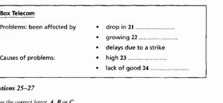
#1 OCR Q[] · 1099×507
Test_4_Section_3_Box_Telecom_Notes.png
assets/public/304512a63095175dcf3358cf5459387917d45b45825e86aa79d81e0855fc514e.png
asset-304512a63095175dcf3358cf5459387917d45b45825e86aa79d81e0855fc514e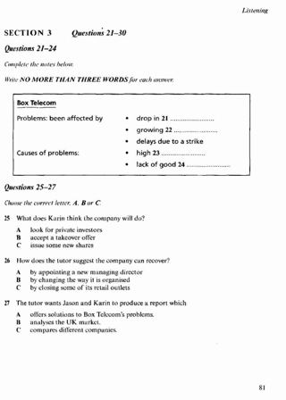
#2 OCR Q[[21, 30], [25, 27]] · 1248×1748
Test_4_Section_3_PDF_Page_082.jpg
assets/public/d8d95abf2072e5b22871e6e2349b8abf34e786cb3f720a87e7969842b037c4ce.jpg
asset-d8d95abf2072e5b22871e6e2349b8abf34e786cb3f720a87e7969842b037c4ce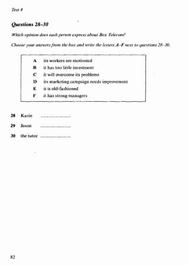
#3 OCR Q[[28, 30], [28, 30]] · 1248×1748
Test_4_Section_3_PDF_Page_083.jpg
assets/public/b9a06bf8325b389b51e0417a14a7563e74e688f74add45b974289a620547187e.jpg
asset-b9a06bf8325b389b51e0417a14a7563e74e688f74add45b974289a620547187eCambridge 05 / Test 4 / Part 4
No confirmed/candidate defect detected; not a visual PASS
Q[31, 36]: 1, 2 [Part fallback]
Q[37, 40]: 1, 2 [Part fallback]
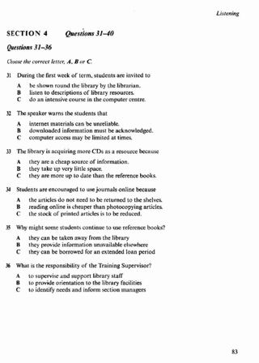
#1 OCR Q[[31, 40], [31, 36]] · 1248×1748
Test_4_Section_4_PDF_Page_084.jpg
assets/public/526e262f9a12dda25ba7e1e62d08ca8e4c5ef74202105cbdb4e3b277fe41abc2.jpg
asset-526e262f9a12dda25ba7e1e62d08ca8e4c5ef74202105cbdb4e3b277fe41abc2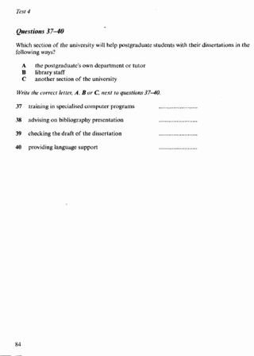
#2 OCR Q[[37, 40], [37, 40]] · 1248×1748
Test_4_Section_4_PDF_Page_085.jpg
assets/public/4f86c83b48874546601c830feadd0bd6f504ddf6fcb7337afb606447cbcb1358.jpg
asset-4f86c83b48874546601c830feadd0bd6f504ddf6fcb7337afb606447cbcb1358